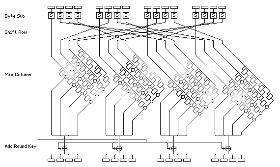

Natječaj je zaključen 15.6.1998. Od 21 pristigle prijave, 15 ih je zadovoljilo NIST-ove kriterije. U kolovozu 1999. NIST je objavio 5 finalista: MARS, RC6, RIJNDAEL, SERPENT i TWOFISH. Recimo nekoliko riječi o ovih 5 finalista.
MARS (IBM), RC6 (RSA Security Inc.) i TWOFISH (Counterpane Systems) spadaju u Feistelove šifre. Podsjetimo se da je Feistelova šifra blokovna šifra u kojoj u i-toj rundi koriste formule Li = Ri -1, Ri = Li -1 ⊕ f (Ri -1, Ki) (dakle, isto kao kod DES-a). MARS spada u nebalansirane Feistelove šifre jer se blokovi ne dijele na 2, već na 4 dijela. MARS ima 32 runde, RC6 ima 20 rundi, dok TWOFISH ima 16 rundi. Specifičnost kriptosustava RC6 (koji je dosta sličan RC5) su korištenje funkcije f(x) = x(2x+1), koja daje difuziju, te rotacija ovisnih o podacima, koje daju otpornost na diferencijalnu i linearnu kriptoanalizu. Specifičnost TWOFISH-a je da se S-kutije dinamički mijenjaju u ovisnosti o ključu, što komplicira diferencijalnu i linearnu kriptoanalizu.
SERPENT su konstruirali kriptografi iz Engleske, Izraela i Danske. Spada u supstitucijsko-permutacijske šifre. Ima 32 runde i, što je za njega specifično, u svakoj rundi paralelno koristi 32 identične S-kutije.
RIJNDAEL su razvili belgijski kriptografi. Razlikuje se od ostalih finalista po tome što se u konstrukciji S-kutija koriste operacije u konačnom polju GF(28).
Konačno, 2.8.2000. objavljeno je da je pobjednik natječaja za AES
RIJNDAEL (čitaj: rejn dol).
RIJNDAEL su razvili belgijski kriptografi
Joan Daemen i Vincent
Rijmen s Katoličkog sveučilišta Leuven, po kojima je i dobio ime.
Kako smo već napomenuli, jedna od njegovih specifičnosti je korištenje konačnog polja GF(28) (alternativna oznaka je F28). Preciznije, elementi od GF(28) su polinomi oblika a7x7 + a6x6 + ... + a1x + a0, ai ∈ {0, 1}, a operacije su zbrajanje i množenje polinoma iz Z2[X] modulo fiksni ireducibilni polinom g(x) = x8 + x4 + x3 + x + 1. Dakle, uzimamo da je GF(28) = Z2[X] / (g(x)). Elemente od GF(28) možemo prikazati i kao bajtove (nizove od 8 bitova). Npr. polinomu x6 + x4 + x2 + x + 1 odgovara bajt 01010111 ili 57 u heksadecimalnom zapisu.
Primjer 7: Pomnožiti polinome x6 + x4 + x2 + x + 1 i x7 + x + 1 iz polja GF(28).
Najprije pomnožimo ova dva polinoma u prstenu Z2[X]:
(x6 + x4 + x2 + x + 1) · (x7 + x + 1) = x13 + x11 + x9 + x8 + x6 + x5 + x4 + x3 + 1.
Potom izračunamo ostatak pri dijeljenju ovog polinoma s g(x). Tako dobijemo rezultat x7 + x6 + 1. Heksadecimalno to možemo zapisati kao: 57 · 83 = C1.
U RIJNDAEL-u se također koriste i operacije na polinomima s
koeficijentima iz GF(28) stupnja manjeg od 4.
Svaki takav polinom možemo reprezentirati kao 4-bajtni vektor.
Zbrajanje takvih polinoma se svodi na zbrajanje koeficijenta uz
iste potencije (zbrajanje u GF(28) smo već definirali).
Da bi kod množenja dobili kao rezultat polinom stupnja manjeg
od 4, moramo produkt reducirati modulo neki polinom četvrtog
stupnja. U RIJNDAEL-u je za to izabran polinom
X4 + 1.
Polinom
|
= |
|
|
Ovdje je polinom d(X) = d3X3 + d2X2 + d1X+ d0 rezultat množenja polinoma a(X) = a3X3 + a2X2 + a1X+ a0 i b(X) = b3X3 + b2X2 + b1X+ b0, u oznaci d(X) = a(X) ⊗ b(X).
Primjer 8: Izračunati:
(03 X3 + 01 X2 + 01 X + 02) ⊗ (0B X3 + 0D X2 + 09 X + 0E).
Označimo rezultat s d(X) = d3X3 + d2X2 + d1X+ d0. Najprije imamo:d3 = 03 · 0E + 01 · 09 + 01 · 0D + 02 · 0B.
Računamo:
03 · 0E =
(x + 1)
·
(x3 + x2 + x) =
x4 + x = 12,
01 · 09 = 09,
01 · 0D = 0D,
02 · 0B =
x ·
(x3 + x + 1) =
x4 + x2 + x = 16.
d3 = 12 + 09 + 0D + 16 = (x4 + x) + (x3 + 1) + (x3 + x2 + 1) + (x4 + x2 + x) = 00.
Na isti način se izračuna d2 = 00, d1 = 00, d0 = 01. Stoga je d(X) = 01, tj. polinom b(X) je inverz polinoma a(X) s obzirom na operaciju ⊗.
RIJNDAEL šifrira blokove od 128 bitova = 16 bajtova. Svaki takav
blok se može shvatiti kao 16 elemenata
polja, koji se reprezentiraju pomoću 4 × 4 matrice s elementima
iz GF(28). Tu matricu ćemo zvati aes-blok.
Ključ također ima 128 bitova (postoje i
varijante sa 192 i 256 bitova). RIJNDAEL ima 10 rundi (uz 128-bitni
ključ). Svaka runda se sastoji od 4 operacije:
SubBytes
ShiftRows
MixColumns
AddRoundKey
Prije prve runde vrši se inicijalno dodavanje ključa (AddRoundKey), a u posljednjoj rundi se izostavlja transformacija MixColumns. Jedna runda AES-a ilustrirana je na slici (prema [Savard: A Cryptographic Compendium]).

SubBytes je jedini nelinearni dio algoritma. Ova transformacija ima 2 koraka:
b'i = bi ⊕ b(i+4) mod 8 ⊕ b(i+5) mod 8 ⊕ b(i+6) mod 8 ⊕ b(i+7) mod 8 ⊕ ci,
gdje je c = 01100011.ShiftRows - ciklički pomiče elemente i-tog retka aes-bloka za i mjesta ulijevo (i = 0,1,2,3).
MixColumns - Stupci matrice se shvate kao polinomi nad GF(28). Dakle, stupac Ai = (a0i, a1i, a2i, a3i) se shvati kao polinom a3iX3 + a2iX2 + a1iX + a0i. Sada se ti polinomi pomnože s polinomom 03 X3 + 01 X2 + 01 X + 02 (u skladu s ranije definiranim operacijama nad polinomima, rezultat se računa modulo X4 + 1).
AddRoundKey je XOR aes-bloka s međuključem koji odgovara trenutnoj rundi.
S-kutije (operacija ByteSub) su dizajnirane tako da bi kriptosustav bio što otporniji na diferencijalnu i linearnu kriptoanalizu, dok su ShiftRow i MixColumn zaslužni za difuziju.
U konstrukciji međuključeva se najprije ključ proširi korištenjem XOR-a i cikličkog pomaka. Prošireni ključ se sastoji od 44 riječi (4-bajtnih vektora). Međuključevi se biraju iz proširenog ključa tako da se prvi međuključ sastoji od prve četiri riječi, drugi od sljedeće četiri, itd.
Preostalo je još opisati malo detaljnije postupak proširivanja ključa. Prve 4 riječi proširenog ključa predstavlja zadani ključ. Svaku sljedeću riječ ri dobijemo iz prethodne riječi ri -1 tako da primijenimo XOR s ri -4. Ako je i višekratnik od 4, onda prije operacije XOR izvršimo operacije RotWord (rotira riječ jedno mjesto ulijevo, tj. [r0r1r2r3] promijeni u [r1r2r3r0]), SubWord (uzima jedan po jedan bajt iz riječi i na svakog od njih primjeni S-kutiju), te XOR s riječi [02(i -4)/4,00,00,00].
Dešifriranje se odvija po istom algoritmu kao i šifriranje,
osim što se umjesto transformacija
ByteSub, ShiftRow i MixColumn koriste njihovi inverzi.
Primijetimo da smo u Primjeru 8 dokazali da polinom
| Web stranica kolegija Kriptografija | Andrej Dujella - osobna stranica |